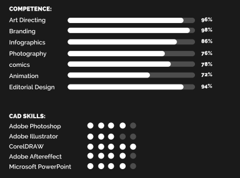

ABOUT ME
I am Abiodun, I love arts.
I am a Web Developer based in Lagos Nigeria specializing in
building reponsive websites and nice UI. I enjoy shaping
products from early concept to implementation and strive to deliver empowering experiences that help bridge the gap between people and products.
I just concluded my Front end web development programme (SOC v4) powered by DSC OAU and I have through the training been able to learn the basics of web development from HTML, CSS and JavaScript.
I also have an interest for design as a whole and I have an eye for beautiful UI/UX designs. Outside programming, I love to read fiction stories.
You can reach me by my social media platforms
